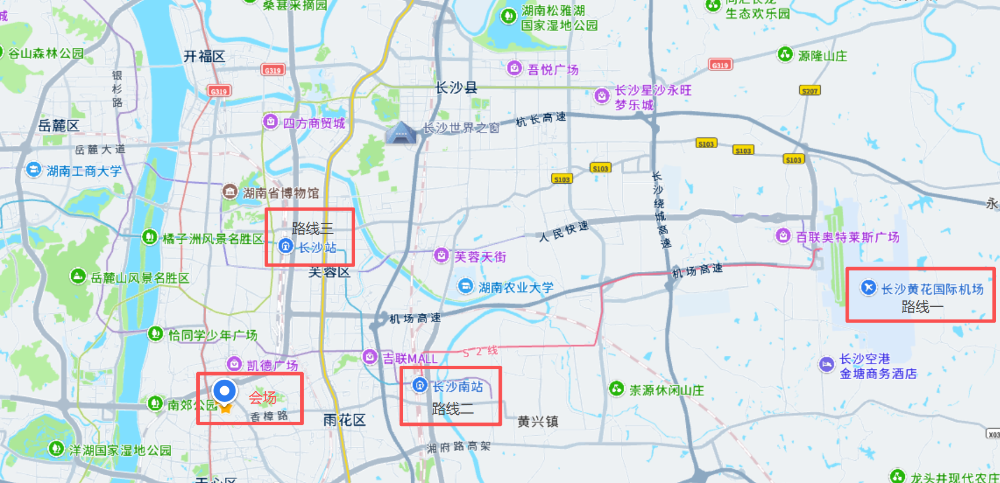

会场：中南大学天心校区礼堂
地址
长沙市天心区韶山南路68号
交通路线

路线1：从长沙黄花国际机场
- 地铁：乘 6 号线（谢家桥方向）→ 文昌阁站换 1 号线（尚双塘方向）→ 铁道学院站，约 1 小时 30 分钟；
- 打车：走机场高速转南二环，约 40 分钟；
- 磁浮+地铁：磁浮快线到磁浮高铁站(长沙南站)，再转 4 号线换 1 号线，约 1 小时 10 分钟。
路线2：从长沙南站（高铁站）
- 地铁：高铁站内乘 4 号线（罐子岭方向）→ 黄土岭站换 1 号线（尚双塘方向）→ 铁道学院站，共 10 站，耗时约 40 分钟；
- 打车：走湘府路快速路转芙蓉南路，约 10 公里、20分钟；
- 公交：步行至长托公交站，然后乘坐 167/68/124 路（华夏方向）达铁道学院站，约 50 分钟。
路线3：从长沙站（火车站）
- 地铁：乘 1 号线（长沙火车西站方向）→ 五一广场换 1 号线（尚双塘方向）→ 铁道学院站，约 40 分钟；
- 打车：沿五一大道转芙蓉中路，约 10 公里、20 分钟；
- 公交：步行至锦泰广场地铁站-公交站，然后乘坐 502 路（鄱阳小区方向）达铁道学院站，约 1 小时。
Tips：
地铁 1 号线铁道学院站 4 号口出，步行 300 米即到校区。